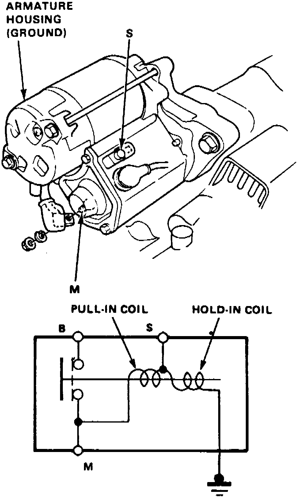

Starter Solenoid: Testing and Inspection
Fig. 14 Starter Solenoid Test:

1. Check hold-in coil continuity between terminal S and ground, Fig. 14; continuity should be indicated.
2. Check pull-in coil continuity between terminals S and M; continuity should be indicated.